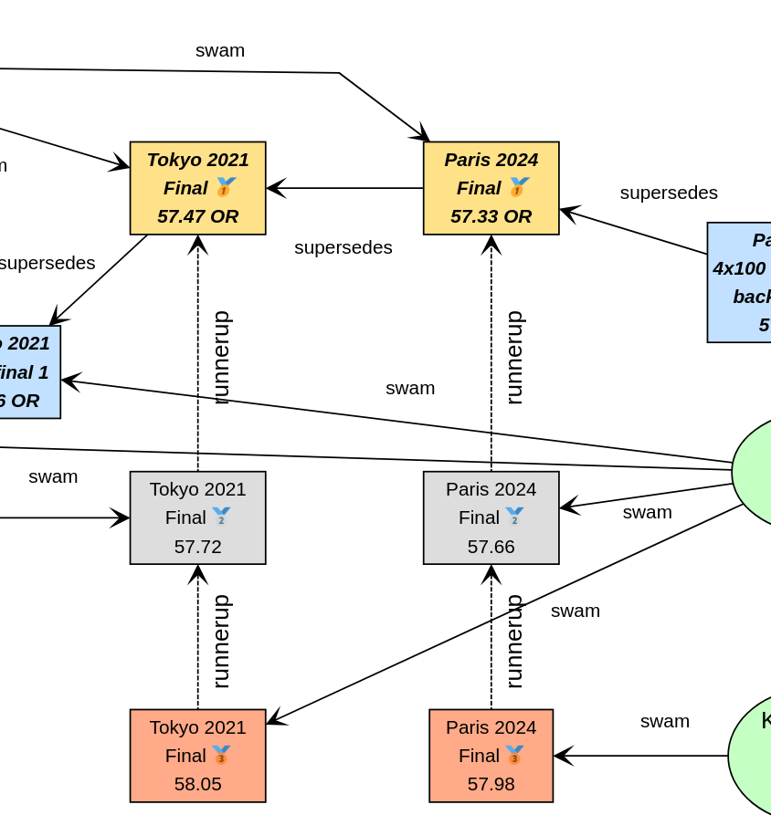
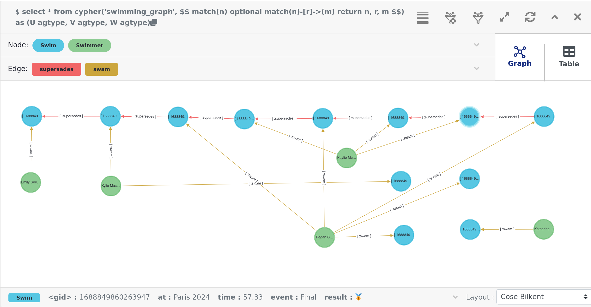
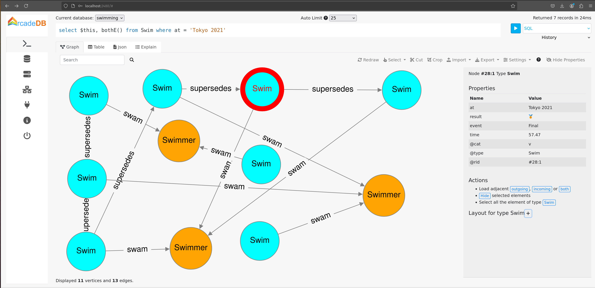

Using Graph Databases with Groovy
Author: Paul King
Published: 2024-08-20 10:18AM
The Olympics is over for another 4 years. For sports fans, there were many exciting moments. Let’s look at just one event where the Olympic record was broken several times over the last three years. We’ll look at the women’s 100m backstroke and model the results as a graph database.
Why the women’s 100m backstroke? Well, that was a particularly exciting event in terms of broken records. In Heat 4 of the Tokyo 2021 Olympics, Kylie Masse broke the record previously held by Emily Seebohm at the London 2012 Olympics. A few minutes later in Heat 5, Regan Smith broke the record again. Then in another few minutes in Heat 6, Kaylee McKeown broke the record again. On the following day in Semifinal 1, Regan took back the record. Then, on the following day in the final, Kaylee reclaimed the record. At the Paris 2024 Olympics, Kaylee bettered her own record in the final. Then a few days later, Regan lead off the 4 x 100m medley relay and broke the backstroke record swimming the first leg. That makes 7 times the record was broken across the 2 games!
We’ll have vertices in our graph database corresponding to the swimmers and the swims.
We’ll use the labels swimmer and swim for these vertices. We’ll have relationships
such as swam and supercedes between vertices. We’ll explore modelling and querying the event
information using several graph database technologies.
The examples in this post can be found on GitHub.
Apache TinkerPop
Our first technology to examine is Apache TinkerPop™.

TinkerPop is an open source computing framework for graph databases. It provides a common abstraction layer, and a graph query language, called Gremlin. This allows you to work with numerous graph database implementations in a consistent way. TinkerPop also provides its own graph engine implementation, called TinkerGraph, which is what we’ll use initially.
We’ll look at the swims for the medalists and record breakers at the Tokyo 2021 and Paris 2024 Olympics in the women’s 100m backstroke. For reference purposes, we’ll also include the previous swim that set an olympic record.
We’ll start by creating a new in-memory graph database and create a helper object for traversing the graph:
var graph = TinkerGraph.open()
var g = traversal().withEmbedded(graph)Next, let’s create the information relevant for the previous Olympic record which was set at the London 2012 Olympics. Emily Seebohm set that record in Heat 4:
var es = g.addV('swimmer').property(name: 'Emily Seebohm', country: '🇦🇺').next()
swim1 = g.addV('swim').property(at: 'London 2012', event: 'Heat 4', time: 58.23, result: 'First').next()
es.addEdge('swam', swim1)We can print out some information from our newly created nodes (vertices) by querying the properties of two nodes respectively:
var (name, country) = ['name', 'country'].collect { es.property(it).value() }
var (at, event, time) = ['at', 'event', 'time'].collect { swim1.property(it).value() }
println "$name from $country swam a time of $time in $event at the $at Olympics"Which has this output:
Emily Seebohm from 🇦🇺 swam a time of 58.23 in Heat 4 at the London 2012 Olympics
So far, we’ve just been using the Java API from TinkerPop. It also provides some additional syntactic sugar for Groovy. We can enable the syntactic sugar with:
SugarLoader.load()Which then lets us write the slightly shorter:
println "$es.name from $es.country swam a time of $swim1.time in $swim1.event at the $swim1.at Olympics"This uses Groovy’s normal property access syntax and has the same output when executed.
Let’s create some helper methods to simplify creation of the remaining information.
def insertSwimmer(TraversalSource g, name, country) {
g.addV('swimmer').property(name: name, country: country).next()
}
def insertSwim(TraversalSource g, at, event, time, result, swimmer) {
var swim = g.addV('swim').property(at: at, event: event, time: time, result: result).next()
swimmer.addEdge('swam', swim)
swim
}Now we can create the remaining swim information:
var km = insertSwimmer(g, 'Kylie Masse', '🇨🇦')
var swim2 = insertSwim(g, 'Tokyo 2021', 'Heat 4', 58.17, 'First', km)
swim2.addEdge('supercedes', swim1)
var swim3 = insertSwim(g, 'Tokyo 2021', 'Final', 57.72, '🥈', km)
var rs = insertSwimmer(g, 'Regan Smith', '🇺🇸')
var swim4 = insertSwim(g, 'Tokyo 2021', 'Heat 5', 57.96, 'First', rs)
swim4.addEdge('supercedes', swim2)
var swim5 = insertSwim(g, 'Tokyo 2021', 'Semifinal 1', 57.86, '', rs)
var swim6 = insertSwim(g, 'Tokyo 2021', 'Final', 58.05, '🥉', rs)
var swim7 = insertSwim(g, 'Paris 2024', 'Final', 57.66, '🥈', rs)
var swim8 = insertSwim(g, 'Paris 2024', 'Relay leg1', 57.28, 'First', rs)
var kmk = insertSwimmer(g, 'Kaylee McKeown', '🇦🇺')
var swim9 = insertSwim(g, 'Tokyo 2021', 'Heat 6', 57.88, 'First', kmk)
swim9.addEdge('supercedes', swim4)
swim5.addEdge('supercedes', swim9)
var swim10 = insertSwim(g, 'Tokyo 2021', 'Final', 57.47, '🥇', kmk)
swim10.addEdge('supercedes', swim5)
var swim11 = insertSwim(g, 'Paris 2024', 'Final', 57.33, '🥇', kmk)
swim11.addEdge('supercedes', swim10)
swim8.addEdge('supercedes', swim11)
var kb = insertSwimmer(g, 'Katharine Berkoff', '🇺🇸')
var swim12 = insertSwim(g, 'Paris 2024', 'Final', 57.98, '🥉', kb)Note that we just entered the swims where medals were won or where olympic records were broken. We could easily have added more swimmers, other strokes and distances, and even other sports if we wanted to.
Let’s have a look at what our graph now looks like:

We now might want to query the graph in numerous ways. For instance, what countries had success at the Paris 2024 olympics, where success is defined for the purposes of this query as winning a medal or breaking a record. Of course, just having a swimmer make the olympic team is a great success - but let’s keep our example simple for now.
var successInParis = g.V().out('swam').has('at', 'Paris 2024').in()
.values('country').toSet()
assert successInParis == ['🇺🇸', '🇦🇺'] as SetBy way of explanation, we find all nodes with an outgoing swam edge
pointing to a swim that was at the Paris 2024 olympics, i.e.
all the swimmers from Paris 2024. We then find the set of countries
represented. We are using sets here to remove duplicates, and also
we aren’t imposing an ordering on the returned results so we compare
sets on both sides.
Similarly, we can find the olympic records set during heat swims:
var recordSetInHeat = g.V().hasLabel('swim')
.filter { it.get().property('event').value().startsWith('Heat') }
.values('at').toSet()
assert recordSetInHeat == ['London 2012', 'Tokyo 2021'] as SetOr, we can find the times of the records set during finals:
var recordTimesInFinals = g.V().has('event', 'Final').as('ev').out('supersedes')
.select('ev').values('time').toSet()
assert recordTimesInFinals == [57.47, 57.33] as SetMaking use of the Groovy syntactic sugar gives simpler versions:
var successInParis = g.V.out('swam').has('at', 'Paris 2024').in.country.toSet
assert successInParis == ['🇺🇸', '🇦🇺'] as Set
var recordSetInHeat = g.V.hasLabel('Swim').filter { it.event.startsWith('Heat') }.at.toSet
assert recordSetInHeat == ['London 2012', 'Tokyo 2021'] as Set
var recordTimesInFinals = g.V.has('event', 'Final').as('ev').out('supersedes').select('ev').time.toSet
assert recordTimesInFinals == [57.47, 57.33] as SetBut graph databases really excel when performing queries involving multiple edge traversals. Here is one looking at all the olympic records set in 2021 and 2024:
println "Olympic records after ${g.V(swim1).values('at', 'event').toList().join(' ')}: "
println g.V(swim1).repeat(in('supersedes')).as('sw').emit()
.values('at').concat(' ')
.concat(select('sw').values('event')).toList().join('\n')Or after using the Groovy syntactic sugar, the query becomes:
println g.V(swim1).repeat(in('supersedes')).as('sw').emit
.at.concat(' ').concat(select('sw').event).toList.join('\n')Both have this output:
Olympic records after London 2012 Heat 4: Tokyo 2021 Heat 4 Tokyo 2021 Heat 5 Tokyo 2021 Heat 6 Tokyo 2021 Semifinal 1 Tokyo 2021 Final Paris 2024 Final Paris 2024 Relay leg1
As a side note, TinkerPop has a GraphMLWriter class which can write out our
graph in GraphML, which is how the above image was created.
Neo4j
Our next technology to examine is neo4j. Neo4j is a graph database storing nodes and edges. Nodes and edges may have a label and properties (or attributes).

Neo4j models edge relationships using enums. Let’s create an enum for our example:
enum SwimmingRelationships implements RelationshipType {
swam, supersedes, runnerup
}We’ll use Neo4j in embedded mode and perform all of our operations as part of a transaction:
// ... set up managementService ...
var graphDb = managementService.database(DEFAULT_DATABASE_NAME)
try (Transaction tx = graphDb.beginTx()) {
// ... other Neo4j code below here ...
}Let’s create our nodes and edges using Neo4j. First the existing Olympic record:
es = tx.createNode(label('Swimmer'))
es.setProperty('name', 'Emily Seebohm')
es.setProperty('country', '🇦🇺')
swim1 = tx.createNode(label('Swim'))
swim1.setProperty('event', 'Heat 4')
swim1.setProperty('at', 'London 2012')
swim1.setProperty('result', 'First')
swim1.setProperty('time', 58.23d)
es.createRelationshipTo(swim1, swam)
var name = es.getProperty('name')
var country = es.getProperty('country')
var at = swim1.getProperty('at')
var event = swim1.getProperty('event')
var time = swim1.getProperty('time')
println "$name from $country swam a time of $time in $event at the $at Olympics"While there is nothing wrong with this code, Groovy has many features for making code more succinct. Let’s use some dynamic metaprogramming to achieve just that.
Node.metaClass {
propertyMissing { String name, val -> delegate.setProperty(name, val) }
propertyMissing { String name -> delegate.getProperty(name) }
methodMissing { String name, args ->
delegate.createRelationshipTo(args[0], SwimmingRelationships."$name")
}
}Now we use normal Groovy property access for setting the node properties. It looks much cleaner. We define an edge relationship simply by calling a method having the relationship name.
km = tx.createNode(label('swimmer'))
km.name = 'Kylie Masse'
km.country = '🇨🇦'
swim2 = tx.createNode(label('swim'))
swim2.time = 58.17d
swim2.result = 'First'
swim2.event = 'Heat 4'
swim2.at = 'Tokyo 2021'
km.swam(swim2)
swim2.supercedes(swim1)
swim3 = tx.createNode(label('swim'))
swim3.time = 57.72d
swim3.result = '🥈'
swim3.event = 'Final'
swim3.at = 'Tokyo 2021'
km.swam(swim3)The code is certainly a lot cleaner, and it was quite a minimal amount of work to define the necessary metaprogramming. With a little bit more work, we could use static metaprogramming techniques. This would give us better IDE completion.
Another interesting topic which we won’t elaborate here is stronger type checking for graphs. For graph libraries which support schemas, the types for node and edge properties can be defined, as can the allowable nodes applicable to any edge relationship. For such systems, if you try to define a poorly-typed property, or incorrectly use a relationship, you will receive a runtime error. Groovy lets us take things further, if we want, and if we are willing to do a little more work. For example, if the schema is available at compile time, we could write a type checking extension which would fail compilation if any invalid edge or vertex definitions were detected.
For now though, let’s continue with defining the rest of our graph.
We can redefine our insertSwimmer and insertSwim methods using Neo4j implementation
calls, and then our earlier code could be used to create our graph. Now let’s
investigate what the queries look like.
First, the successful countries in Paris 2024:
var swimmers = [es, km, rs, kmk, kb]
var successInParis = swimmers.findAll { swimmer ->
swimmer.getRelationships(swam).any { run ->
run.getOtherNode(swimmer).at == 'Paris 2024'
}
}
assert successInParis*.country.unique() == ['🇺🇸', '🇦🇺']Then, at which olympics were records broken in heats:
var swims = [swim1, swim2, swim3, swim4, swim5, swim6, swim7, swim8, swim9, swim10, swim11, swim12]
var recordSetInHeat = swims.findAll { swim ->
swim.event.startsWith('Heat')
}*.at
assert recordSetInHeat.unique() == ['London 2012', 'Tokyo 2021']Now, what were the times for records broken in finals:
var recordTimesInFinals = swims.findAll { swim ->
swim.event == 'Final' && swim.hasRelationship(supercedes)
}*.time
assert recordTimesInFinals == [57.47d, 57.33d]To see traversal in action, Neo4j has a special API for doing such queries:
var info = { s -> "$s.at $s.event" }
println "Olympic records following ${info(swim1)}:"
for (Path p in tx.traversalDescription()
.breadthFirst()
.relationships(supersedes)
.evaluator(Evaluators.fromDepth(1))
.uniqueness(Uniqueness.NONE)
.traverse(swim1)) {
println p.endNode().with(info)
}Earlier versions of Neo4j also supported Gremlin, so we could have written our queries in the same was as we did for TinkerPop. That technology is deprecated for Neo4j, and instead they now offer a Cypher query language. We can use that language for all of our previous queries as shown here:
assert tx.execute('''
MATCH (s:Swim WHERE s.event STARTS WITH 'Heat')
WITH s.at as at
WITH DISTINCT at
RETURN at
''')*.at == ['London 2012', 'Tokyo 2021']
assert tx.execute('''
MATCH (s1:Swim {event: 'Final'})-[:supersedes]->(s2:Swim)
RETURN s1.time AS time
''')*.time == [57.47d, 57.33d]
tx.execute('''
MATCH (s1:Swim)-[:supersedes]->{1,}(s2:Swim { at: $at })
RETURN s1
''', [at: swim1.at])*.s1.each { s ->
println "$s.at $s.event"
}An aside on graph design
This blog post is definitely, not meant to be an advanced course on graph database design, but it is worth pointing out a few points.
Deciding which information should be stored as node properties and which as relationships
still requires developer judgement. For example, we could have added a Boolean olympicRecord
property to our Swim nodes. Certain queries might now become simpler, or at least more familiar
to traditional RDBMS SQL developers, but other queries might become much harder to write
and potentially much less efficient.
This is the kind of thing which needs to be thought through and sometimes experimented with.
Suppose, in the case where a record is broken, we wanted to see which other swimmers (in our case medallists in the final) also broke the previous record. We could write a query to find this as follows:
assert tx.execute('''
MATCH (sr1:swimmer)-[:swam]->(sm1:swim {event: 'Final'}), (sm2:swim {event: 'Final'})-[:supercedes]->(sm3:swim)
WHERE sm1.at = sm2.at AND sm1 <> sm2 AND sm1.time < sm3.time
RETURN sr1.name as name
''')*.name == ['Kylie Masse']It’s not too bad, but if we had a much larger graph of data, it could be quite slow.
We could instead opt to use an additional relationship, called runnerup in our graph.
swim6.runnerup(swim3)
swim3.runnerup(swim10)
swim12.runnerup(swim7)
swim7.runnerup(swim11)The visualization is something like this:

It essentially makes it easier to find the other medalists if we know any one of them.
The resulting query becomes this:
assert tx.execute('''
MATCH (sr1:swimmer)-[:swam]->(sm1:swim {event: 'Final'})-[:runnerup]->{1,2}(sm2:swim {event: 'Final'})-[:supercedes]->(sm3:swim)
WHERE sm1.time < sm3.time
RETURN sr1.name as name
''')*.name == ['Kylie Masse']The MATCH clause is similar in complexity, the WHERE clause is much simpler. The query is probably faster too, but it is a tradeoff that should be weighed up.
Apache AGE
The next technology we’ll look at is the Apache AGE™ graph database. Apache AGE leverages PostgreSQL for storage.


We installed Apache AGE via a Docker Image as outlined in the Apache AGE manual.
Since Apache AGE offers a SQL-inspired graph database experience, we use Groovy’s SQL facilities to interact with the database:
Sql.withInstance(DB_URL, USER, PASS, 'org.postgresql.jdbc.PgConnection') { sql ->
// enable Apache AGE extension, then use Sql connection ...
}For creating our nodes and subsequent querying, we use SQL statements with embedded cypher clauses. Here is the statement for creating out nodes and edges:
sql.execute'''
SELECT * FROM cypher('swimming_graph', $$ CREATE
(es:Swimmer {name: 'Emily Seebohm', country: '🇦🇺'}),
(swim1:Swim {event: 'Heat 4', result: 'First', time: 58.23, at: 'London 2012'}),
(es)-[:swam]->(swim1),
(km:Swimmer {name: 'Kylie Masse', country: '🇨🇦'}),
(swim2:Swim {event: 'Heat 4', result: 'First', time: 58.17, at: 'Tokyo 2021'}),
(km)-[:swam]->(swim2),
(swim2)-[:supersedes]->(swim1),
(swim3:Swim {event: 'Final', result: '🥈', time: 57.72, at: 'Tokyo 2021'}),
(km)-[:swam]->(swim3),
(rs:Swimmer {name: 'Regan Smith', country: '🇺🇸'}),
(swim4:Swim {event: 'Heat 5', result: 'First', time: 57.96, at: 'Tokyo 2021'}),
(rs)-[:swam]->(swim4),
(swim4)-[:supersedes]->(swim2),
(swim5:Swim {event: 'Semifinal 1', result: 'First', time: 57.86, at: 'Tokyo 2021'}),
(rs)-[:swam]->(swim5),
(swim6:Swim {event: 'Final', result: '🥉', time: 58.05, at: 'Tokyo 2021'}),
(rs)-[:swam]->(swim6),
(swim7:Swim {event: 'Final', result: '🥈', time: 57.66, at: 'Paris 2024'}),
(rs)-[:swam]->(swim7),
(swim8:Swim {event: 'Relay leg1', result: 'First', time: 57.28, at: 'Paris 2024'}),
(rs)-[:swam]->(swim8),
(kmk:Swimmer {name: 'Kaylee McKeown', country: '🇦🇺'}),
(swim9:Swim {event: 'Heat 6', result: 'First', time: 57.88, at: 'Tokyo 2021'}),
(kmk)-[:swam]->(swim9),
(swim9)-[:supersedes]->(swim4),
(swim5)-[:supersedes]->(swim9),
(swim10:Swim {event: 'Final', result: '🥇', time: 57.47, at: 'Tokyo 2021'}),
(kmk)-[:swam]->(swim10),
(swim10)-[:supersedes]->(swim5),
(swim11:Swim {event: 'Final', result: '🥇', time: 57.33, at: 'Paris 2024'}),
(kmk)-[:swam]->(swim11),
(swim11)-[:supersedes]->(swim10),
(swim8)-[:supersedes]->(swim11),
(kb:Swimmer {name: 'Katharine Berkoff', country: '🇺🇸'}),
(swim12:Swim {event: 'Final', result: '🥉', time: 57.98, at: 'Paris 2024'}),
(kb)-[:swam]->(swim12)
$$) AS (a agtype)
'''To find which olympics where records were set in heats, we can use the following cypher query:
assert sql.rows('''
SELECT * from cypher('swimming_graph', $$
MATCH (s:swim)
WHERE left(s.event, 4) = 'Heat'
RETURN s
$$) AS (a agtype)
''').a*.map*.get('properties')*.at.toUnique() == ['London 2012', 'Tokyo 2021']The results come back in a special JSON-like data type called agtype.
From that, we can query the properties and return the at property.
We select the unique ones to remove duplicates.
Similarly, we can find the times of olympic records set in finals as follows:
assert sql.rows('''
SELECT * from cypher('swimming_graph', $$
MATCH (s1:Swim {event: 'Final'})-[:supersedes]->(s2:Swim)
RETURN s1
$$) AS (a agtype)
''').a*.map*.get('properties')*.time == [57.47, 57.33]To print all the olympic records set across Tokyo 2021 and Paris 2024,
we can use eachRow and the following query:
sql.eachRow('''
SELECT * from cypher('swimming_graph', $$
MATCH (s1:Swim)-[:supersedes]->(swim1)
RETURN s1
$$) AS (a agtype)
''') {
println it.a*.map*.get('properties')[0].with{ "$it.at $it.event" }
}The output looks like this:
Tokyo 2021 Heat 4 Tokyo 2021 Heat 5 Tokyo 2021 Heat 6 Tokyo 2021 Final Tokyo 2021 Semifinal 1 Paris 2024 Final Paris 2024 Relay leg1
The Apache AGE project also maintains a viewer tool offering a web-based user interface for visualization of graph data stored in our database. Instructions for installation are available on the GitHub site. The tool allows visualization of the results from any query. For our database, a query returning all nodes and edges creates a visualization like below (we chose to manually re-arrange the nodes):

OrientDB

The next graph database we’ll look at is OrientDB. We used the open source Community edition. We used it in embedded mode but there are instructions for running a docker image as well.
The main claim to fame for OrientDB (and the closely related ArcadeDB we’ll cover next) is that they are multi-model databases, supporting graphs and documents in the one database.
Creating our database and setting up our vertex and edge classes (think mini-schema) is done as follows:
try (var db = context.open("swimming", "admin", "adminpwd")) {
db.createVertexClass('Swimmer')
db.createVertexClass('Swim')
db.createEdgeClass('swam')
db.createEdgeClass('supersedes')
// other code here
}See the GitHub repo for further details.
With initialization out fo the way, we can start defining our nodes and edges:
var es = db.newVertex('Swimmer')
es.setProperty('name', 'Emily Seebohm')
es.setProperty('country', '🇦🇺')
var swim1 = db.newVertex('Swim')
swim1.setProperty('at', 'London 2012')
swim1.setProperty('result', 'First')
swim1.setProperty('event', 'Heat 4')
swim1.setProperty('time', 58.23)
es.addEdge(swim1, 'swam')We can print out the details as before:
var (name, country) = ['name', 'country'].collect { es.getProperty(it) }
var (at, event, time) = ['at', 'event', 'time'].collect { swim1.getProperty(it) }
println "$name from $country swam a time of $time in $event at the $at Olympics"At this point, we could apply some Groovy metaprogramming to make the code more succinct,
but we’ll just flesh out our insertSwimmer and insertSwim helper methods like before.
We can use these to enter the remaining swim information.
Queries are performed using the Multi-Model API using SQL-like queries. Our three queries we’ve seen earlier look like this:
var results = db.query("SELECT expand(out('supersedes').in('supersedes')) FROM Swim WHERE event = 'Final'")
assert results*.getProperty('time').toSet() == [57.47, 57.33] as Set
results = db.query("SELECT expand(out('supersedes')) FROM Swim WHERE event.left(4) = 'Heat'")
assert results*.getProperty('at').toSet() == ['Tokyo 2021', 'London 2012'] as Set
results = db.query("SELECT country FROM ( SELECT expand(in('swam')) FROM Swim WHERE at = 'Paris 2024' )")
assert results*.getProperty('country').toSet() == ['🇺🇸', '🇦🇺'] as SetTraversal looks like this:
results = db.query("TRAVERSE in('supersedes') FROM :swim", swim1)
results.each {
if (it.toElement() != swim1) {
println "${it.getProperty('at')} ${it.getProperty('event')}"
}
}OrientDB also supports Gremlin and a studio Web-UI. Both of these features are very similar to the ArcadeDB counterparts. We’ll examine them next when we look at ArcadeDB.
ArcadeDB
Now, we’ll examine ArcadeDB.

ArcadeDB is a rewrite/partial fork of OrientDB and carries over its Multi-Model nature. We used it in embedded mode but there are instructions for running a docker image if you prefer.
Not surprisingly, some usage of ArcadeDB is very similar to OrientDB. Initialization changes slightly:
var factory = new DatabaseFactory("swimming")
try (var db = factory.create()) {
db.transaction { ->
db.schema.with {
createVertexType('Swimmer')
createVertexType('Swim')
createEdgeType('swam')
createEdgeType('supersedes')
}
// ... other code goes here ...
}
}Defining the existing record information is done as follows:
var es = db.newVertex('Swimmer')
es.set(name: 'Emily Seebohm', country: '🇦🇺').save()
var swim1 = db.newVertex('Swim')
swim1.set(at: 'London 2012', result: 'First', event: 'Heat 4', time: 58.23).save()
swim1.newEdge('swam', es, false).save()Accessing the information can be done like this:
var (name, country) = ['name', 'country'].collect { es.get(it) }
var (at, event, time) = ['at', 'event', 'time'].collect { swim1.get(it) }
println "$name from $country swam a time of $time in $event at the $at Olympics"ArcadeDB supports multiple query languages. The SQL-like language mirrors the OrientDB offering. Here are our three now familiar queries:
var results = db.query('SQL', '''
SELECT expand(outV()) FROM (SELECT expand(outE('supersedes')) FROM Swim WHERE event = 'Final')
''')
assert results*.toMap().time.toSet() == [57.47, 57.33] as Set
results = db.query('SQL', "SELECT expand(outV()) FROM (SELECT expand(outE('supersedes')) FROM Swim WHERE event.left(4) = 'Heat')")
assert results*.toMap().at.toSet() == ['Tokyo 2021', 'London 2012'] as Set
results = db.query('SQL', "SELECT country FROM ( SELECT expand(out('swam')) FROM Swim WHERE at = 'Paris 2024' )")
assert results*.toMap().country.toSet() == ['🇺🇸', '🇦🇺'] as SetHere is our traversal example:
results = db.query('SQL', "TRAVERSE out('supersedes') FROM :swim", swim1)
results.each {
if (it.toElement() != swim1) {
var props = it.toMap()
println "$props.at $props.event"
}
}ArcadeDB also supports Cypher queries (like Neo4j). The times for records in finals query using the Cypher dialect looks like this:
results = db.query('cypher', '''
MATCH (s1:Swim {event: 'Final'})-[:supersedes]->(s2:Swim)
RETURN s1.time AS time
''')
assert results*.toMap().time.toSet() == [57.47, 57.33] as SetArcadeDB also supports Gremlin queries. The times for records in finals query using the Gremlin dialect looks like this:
results = db.query('gremlin', '''
g.V().has('event', 'Final').as('ev').out('supersedes').select('ev').values('time')
''')
assert results*.toMap().result.toSet() == [57.47, 57.33] as SetRather than just passing a Gremlin query as a String, we can get full access to the TinkerPop environment as this example show:
try (final ArcadeGraph graph = ArcadeGraph.open("swimming")) {
var recordTimesInFinals = graph.traversal().V().has('event', 'Final').as('ev').out('supersedes')
.select('ev').values('time').toSet()
assert recordTimesInFinals == [57.47, 57.33] as Set
}ArcadeDB also supports a Studio Web-UI. Here is an example of using Studio with a query that looks at all nodes and edges associated with the Tokyo 2021 olympics:

TuGraph
Next, we’ll look at TuGraph.

We used the Community Edition using a docker image as outlined in the documentation and here. TuGraph’s claim to fame is high performance. Certainly, that isn’t really needed for this example, but let’s have a play anyway.
There are a few ways to talk to TuGraph. We’ll use the recommended Neo4j Bolt client which uses the Bolt protocol to talk to the TuGraph server.
We’ll create a session using that client plus a helper run method to invoke our queries.
var authToken = AuthTokens.basic("admin", "73@TuGraph")
var driver = GraphDatabase.driver("bolt://localhost:7687", authToken)
var session = driver.session(SessionConfig.forDatabase("default"))
var run = { String s -> session.run(s) }Next, we set up our database including providing a schema for our nodes, edges and properties.
One point of difference with earlier examples is that TuGraph needs a primary key for each vertex.
Hence, we added the id for our Swim vertex.
'''
CALL db.dropDB()
CALL db.createVertexLabel('Swimmer', 'name', 'name', STRING, false, 'country', STRING, false)
CALL db.createVertexLabel('Swim', 'id', 'id', INT32, false, 'event', STRING, false, 'result', STRING, false, 'at', STRING, false, 'time', FLOAT, false)
CALL db.createEdgeLabel('swam','[["Swimmer","Swim"]]')
CALL db.createEdgeLabel('supersedes','[["Swim","Swim"]]')
'''.trim().readLines().each{ run(it) }With these defined, we can create our swim information:
run '''create
(es:Swimmer {name: 'Emily Seebohm', country: 'AU'}),
(swim1:Swim {event: 'Heat 4', result: 'First', time: 58.23, at: 'London 2012', id:1}),
(es)-[:swam]->(swim1),
(km:Swimmer {name: 'Kylie Masse', country: 'CA'}),
(swim2:Swim {event: 'Heat 4', result: 'First', time: 58.17, at: 'Tokyo 2021', id:2}),
(km)-[:swam]->(swim2),
(swim3:Swim {event: 'Final', result: 'Silver', time: 57.72, at: 'Tokyo 2021', id:3}),
(km)-[:swam]->(swim3),
(swim2)-[:supersedes]->(swim1),
(rs:Swimmer {name: 'Regan Smith', country: 'US'}),
(swim4:Swim {event: 'Heat 5', result: 'First', time: 57.96, at: 'Tokyo 2021', id:4}),
(rs)-[:swam]->(swim4),
(swim5:Swim {event: 'Semifinal 1', result: 'First', time: 57.86, at: 'Tokyo 2021', id:5}),
(rs)-[:swam]->(swim5),
(swim6:Swim {event: 'Final', result: 'Bronze', time: 58.05, at: 'Tokyo 2021', id:6}),
(rs)-[:swam]->(swim6),
(swim7:Swim {event: 'Final', result: 'Silver', time: 57.66, at: 'Paris 2024', id:7}),
(rs)-[:swam]->(swim7),
(swim8:Swim {event: 'Relay leg1', result: 'First', time: 57.28, at: 'Paris 2024', id:8}),
(rs)-[:swam]->(swim8),
(swim4)-[:supersedes]->(swim2),
(kmk:Swimmer {name: 'Kaylee McKeown', country: 'AU'}),
(swim9:Swim {event: 'Heat 6', result: 'First', time: 57.88, at: 'Tokyo 2021', id:9}),
(kmk)-[:swam]->(swim9),
(swim9)-[:supersedes]->(swim4),
(swim5)-[:supersedes]->(swim9),
(swim10:Swim {event: 'Final', result: 'Gold', time: 57.47, at: 'Tokyo 2021', id:10}),
(kmk)-[:swam]->(swim10),
(swim10)-[:supersedes]->(swim5),
(swim11:Swim {event: 'Final', result: 'Gold', time: 57.33, at: 'Paris 2024', id:11}),
(kmk)-[:swam]->(swim11),
(swim11)-[:supersedes]->(swim10),
(swim8)-[:supersedes]->(swim11),
(kb:Swimmer {name: 'Katharine Berkoff', country: 'US'}),
(swim12:Swim {event: 'Final', result: 'Bronze', time: 57.98, at: 'Paris 2024', id:12}),
(kb)-[:swam]->(swim12)
'''|
Note
|
In my attempts to use this client, emoji content seemed to break the property parser. For now, I have replaced emoji content with simple text. I’ll revise this post should I find a better workaround or if the issue is otherwise resolved. |
TuGraph uses Cypher style queries. Here are our three standard queries:
assert run('''
MATCH (sr:Swimmer)-[:swam]->(sm:Swim {at: 'Paris 2024'})
RETURN DISTINCT sr.country AS country
''')*.get('country')*.asString().toSet() == ["US", "AU"] as Set
assert run('''
MATCH (s:Swim)
WHERE s.event STARTS WITH 'Heat'
RETURN DISTINCT s.at AS at
''')*.get('at')*.asString().toSet() == ["London 2012", "Tokyo 2021"] as Set
assert run('''
MATCH (s1:Swim {event: 'Final'})-[:supersedes]->(s2:Swim)
RETURN s1.time as time
''')*.get('time')*.asDouble().toSet() == [57.47d, 57.33d] as SetHere is our traversal query:
run('''
MATCH (s1:Swim)-[:supersedes*1..10]->(s2:Swim {at: 'London 2012'})
RETURN s1.at as at, s1.event as event
''')*.asMap().each{ println "$it.at $it.event" }Apache HugeGraph
Our final technology is Apache HugeGraph. It is a project undergoing incubation at the ASF.

HugeGraph’s claim to fame is the ability to support very large graph databases. Again, not really needed for this example, but it should be fun to play with. We used a docker image as described in the documentation.
Setup involved creating a client for talking to the server (running on the docker image):
var client = HugeClient.builder("http://localhost:8080", "hugegraph").build()Next, we defined the schema for our graph database:
var schema = client.schema()
schema.propertyKey("num").asInt().ifNotExist().create()
schema.propertyKey("name").asText().ifNotExist().create()
schema.propertyKey("country").asText().ifNotExist().create()
schema.propertyKey("at").asText().ifNotExist().create()
schema.propertyKey("event").asText().ifNotExist().create()
schema.propertyKey("result").asText().ifNotExist().create()
schema.propertyKey("time").asDouble().ifNotExist().create()
schema.vertexLabel('Swimmer')
.properties('name', 'country')
.primaryKeys('name')
.ifNotExist()
.create()
schema.vertexLabel('Swim')
.properties('num', 'at', 'event', 'result', 'time')
.primaryKeys('num')
.ifNotExist()
.create()
schema.edgeLabel("swam")
.sourceLabel("Swimmer")
.targetLabel("Swim")
.ifNotExist()
.create()
schema.edgeLabel("supersedes")
.sourceLabel("Swim")
.targetLabel("Swim")
.ifNotExist()
.create()
schema.indexLabel("SwimByEvent")
.onV("Swim")
.by("event")
.secondary()
.ifNotExist()
.create()
schema.indexLabel("SwimByAt")
.onV("Swim")
.by("at")
.secondary()
.ifNotExist()
.create()While, technically, HugeGraph supports composite keys,
it seemed to work better when the Swim vertex had a single primary key.
We used the num field just giving a number to each swim.
We use the graph API used for creating nodes and edges:
var g = client.graph()
var es = g.addVertex(T.LABEL, 'Swimmer', 'name', 'Emily Seebohm', 'country', '🇦🇺')
var swim1 = g.addVertex(T.LABEL, 'Swim', 'at', 'London 2012', 'event', 'Heat 4', 'time', 58.23, 'result', 'First', 'num', NUM++)
es.addEdge('swam', swim1)Here is how to print out some node information:
var (name, country) = ['name', 'country'].collect { es.property(it) }
var (at, event, time) = ['at', 'event', 'time'].collect { swim1.property(it) }
println "$name from $country swam a time of $time in $event at the $at Olympics"We now create the other swimmer and swim nodes and edges.
Gremlin queries are invoked through a gremlin helper object. Our three standard queries look like this:
var gremlin = client.gremlin()
var successInParis = gremlin.gremlin('''
g.V().out('swam').has('Swim', 'at', 'Paris 2024').in().values('country').dedup().order()
''').execute()
assert successInParis.data() == ['🇦🇺', '🇺🇸']
var recordSetInHeat = gremlin.gremlin('''
g.V().hasLabel('Swim')
.filter { it.get().property('event').value().startsWith('Heat') }
.values('at').dedup().order()
''').execute()
assert recordSetInHeat.data() == ['London 2012', 'Tokyo 2021']
var recordTimesInFinals = gremlin.gremlin('''
g.V().has('Swim', 'event', 'Final').as('ev').out('supersedes').select('ev').values('time').order()
''').execute()
assert recordTimesInFinals.data() == [57.33, 57.47]Here is our traversal example:
println "Olympic records after ${swim1.properties().subMap(['at', 'event']).values().join(' ')}: "
gremlin.gremlin('''
g.V().has('at', 'London 2012').repeat(__.in('supersedes')).emit().values('at', 'event')
''').execute().data().collate(2).each { a, e ->
println "$a $e"
}